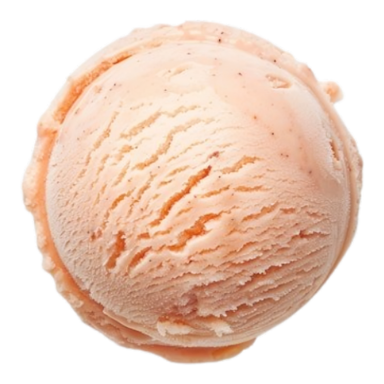

Peach
Ice Cream
Delicate peach flavor blended into smooth, velvety ice cream for a summer-perfect indulgence. Enjoy the fruity essence in creamy, dreamy scoops that practically melt in your mouth, bringing a burst of natural sweetness and happiness with every delightful bite.
